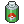
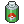
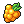
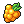
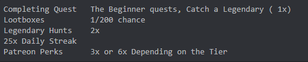

![[pkb]](meow.png)
How to buy Pokeballs
;shops then read the explain at the bottom
How to Obtain Lootboxes
You can obtain lootboxes by completing Quest, by completing different catching streak and by Voting
To open them, Type ;lootbox, or ;items open lootbox
What to get from Lootboxes
You have a chance at receiving ![[pkb]](pkb.png)
![[pkb]](gb.png)
![[pkb]](ub.png) and even a
and even a ![[pkb]](mb.png) if you're lucky! You can also get other items such as 
if you're lucky! You can also get other items such as  ![[pkb]](quest.png) and .
and .
New items will be added to lootboxes as they are introduced into the game.
How to Obtain Masterballs

Available items in the game and their uses
-Swap Tokens : these items obtainable via quest are redeemable using the ;swap command and will let you swap without the standard cost
-Amulet coins : Amulet coins are a must for those who want to get lots of coins, you can have 10 maximum and each one you buy gives a 5% bonus each time you catch a Pokemon, all together gaining 50%. Available from the shop
-Golden Razzberry : These berries are handy for those wanting to hunt legends, each berry used with the command ;grazz all or ;grazz (amount) boosts your encounter chance to 1/500 for the next 50 encounters.
-Quest Scroll Reset : This scroll accessible from opening lootboxes are handing for resetting quests you find tedious or you would prefer a better one. Using the command ;quest reset (number quest you want to reset) will delete that one and make you able to get a new one with the ;q command
-Exp share : This item is ideal for training up your pokemon fast for the upcoming battle feature, it’s only available in the shop and you only need 1!
-Shiny Charm : These items are handy for those who want to collect, hoard and try for a shiny living dex. They are for purchase in the shop for 50 vote coins each, they stack up to 5 and give you a 1% boost for each to a maximum of 5%. That brings the shiny chance from 1/8192 down to 1/7802
-Repel These are useful if you are tired of getting all those pesky commons, these reduce the rate commons will spawn and are great for stacking with grazz berries. They activate using the command ;repel (amount) or ;repel all and they last for 30 encounters each